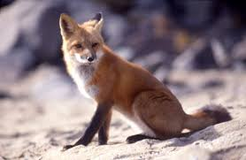

Rudā lapsa (Vulpes vulpes) biežāk saukta vienkārši lapsa ir suņu dzimtas (Canidae) lapsu ģints (Vulpes) plēsējs, kas sastopams gandrīz visos kontinentos, izņemot Dienvidameriku un Austrāliju.  Gribi uzzināt vairāk? Spied šeit